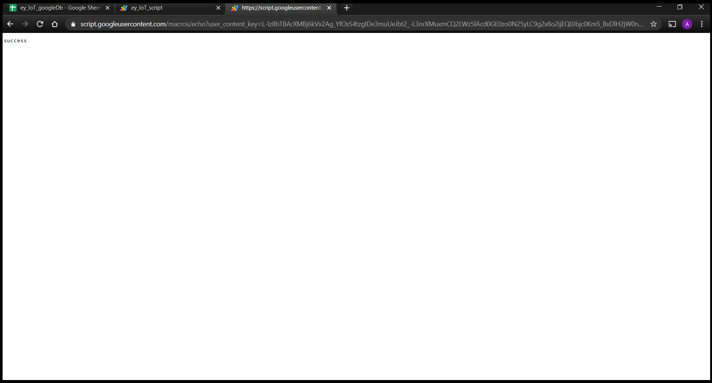
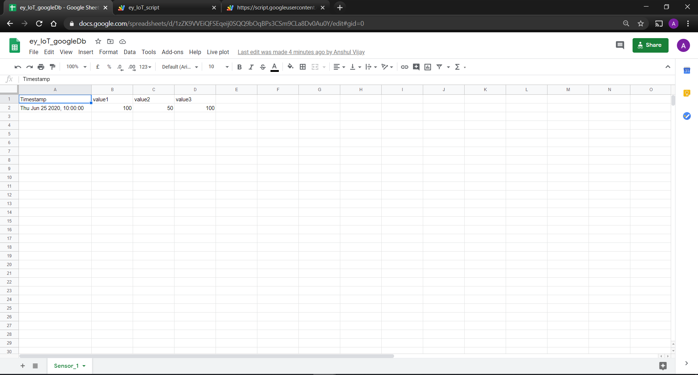

HTTP
In this section, we will be logging/storing dummy sensor data in the google spreadsheets and sending alert notification through gmail using HTTP messaging protocol.
First of all, users need a google account in order to proceed. If you do not have it already, kindly create one.
Open Google Sheets: Google Sheets
Create a blank sheet and name it as per your choice. Here we have named it as Sensor_1 . Note the difference between the complete spreadsheet name which is ey_IoT_googleDb in this case and individual sheet name which is Sensor_1.
Write headings for two columns, Timestamp, value . Timestamp indicates the date and time at which sensor readings will be updated in the subsequent columns. This column will be updated automatically when a reading is send to the sheet via an HTTP GET request. value is the reading itself. We can have multiple values columns for multiple sensor readings which is explained further in this document.
Go to Tools -> Script editor. to open a new tab with the code editor window.
This will open a new tab in your browser, which is the Google Apps Script editor window:
Here, we will be writing some script (see https://developers.google.com/apps-script) for extending our sheet’s functionality. The script will be processing HTTP GET (more at https://en.wikipedia.org/wiki/Hypertext_Transfer_Protocol) requests and forwarding the data passed as parameters to the sheet, and plots live sensor readings on chart.

By default, it’ll open with a single Google Script file (code.gs) and a default code block, myFunction():
For this project, you will have two files: Code.gs and Index.html .
Copy and paste below mentioned code in Code.gs file.
function doGet(e){
// open the spreadsheet
var ss = SpreadsheetApp.getActive();
// use the 'id' parameter to differentiate between sheet
var sheet = ss.getSheetByName(e.parameter["id"]);
// extract headers
// getRange accepts row, col, number_of_rows and num_of_cols as argument
// getLastColumn returns the position of the last column that has content
var headers = sheet.getRange(1, 1, 1, sheet.getLastColumn()).getValues()[0];
// store the position of the last row
var lastRow = sheet.getLastRow();
var cell = sheet.getRange('a1');
var col = 0;
var d = new Date();
for (i in headers)
{
// loop through the headers and if a parameter name matches the header name insert the value
if (headers[i] == "Timestamp")
{
val = d.toDateString() + ", " + d.toLocaleTimeString();
}
else
{
val = e.parameter[headers[i]];
}
// append data to the last row
cell.offset(lastRow, col).setValue(val);
col++;
}
//Checks the last logged data in the sheet, sends email if data greater is than threshold
var sh = SpreadsheetApp.getActiveSpreadsheet().getActiveSheet();
var lastRow = sh.getLastRow();
var lastCol = sh.getLastColumn();
var data = sh.getRange(lastRow, lastCol).getValue();
if(data > 100) //set your threshold here
{
var sheet_e = SpreadsheetApp.getActiveSpreadsheet().getSheetByName("Emails");
let startRow_e = 2; // First row of data to process
const dataRange_e = sheet_e.getRange(startRow_e, 1, sheet_e.getLastRow()-1, 2);
// Fetch values for each row in the Range.
const data_e = dataRange_e.getValues();
for (let row_e of data_e)
{
const emailAddress = row_e[0]; // First column
Logger.log(emailAddress)
var message = "Warning! Temperature has crossed the threshold value. Right now, the temperature is " + data + " \n" ;
let subject = 'Sending emails from a Weather Monitoring System';
//Send emails to emailAddresses which are presents in First column
MailApp.sendEmail(emailAddress, subject, message);
}
}
}
Changes to be made in Code.gs:
- Change threshold value as per your requirement.
- Create a sheet named "Emails" in the same spreadsheet and add the mail ids on which you want to send the email.
- The text message, which will be mailed to the specified mail id when threshold readings are violated, can also be altered as per user's requirement.
After all editing in the code, Go to Deploy -> New Deployment . You will get dialog box as below.
Click on Settings button and select Web app. Make the app accessible to Anyone . Execute the app as Me and click on Deploy.
Then Authorization required dialog box will appear. Click on Review Permissions .

Choose your Google account.
Then Google will asks for verification and you will be getting a window like given below. So click on Advanced .

Scroll down and click on Go to ey_IoT_script (unsafe) .
Then click on Allow . You will get a dialog box like this below.
Copy the link that is provided to you, at this step , and click on OK
The link will look like this,
https://script.google.com/macros/s/{your-sheet-id}/exec
In the previous code, I mentioned about parameters. I am using the parameter id to differentiate between sheets. At the same time, if a parameter name matches with a header name, the script would be writing to that column. The header in my sheet, other than Timestamp is value . So would be the parameters.
A sample URL containing the query parameters is,
https://script.google.com/macros/s/{your-sheet-id}/exec?id=Sensor_1&value=100
Note : Headers in the spreadsheet (value in this case) and the query parameters in your URL must be same.
Also id is nothing but name of the sheet which in this case is Sensor_1.
When the URL is pasted in the address bar of the browser and invoked,

Something happened. Maybe, check our sheet.

Whoa! . You have successfully added a data in the sheet.
What if you wanted to upload more than one sensor readings to spreadsheet?
In the tutorial above, you have come across to upload one sensor reading named 'value' to the spreadsheet. Now if you wanted to upload more than one sensor readings to the spreadsheet, what would you do?
Let's say you wanted to upload 3 sensor readings named value1 , value2 , value3 to the spreadsheet. Just follow below mentioned steps.
Step 1 : In the same spreadsheet, make 3 headers in your sheet other than Timestamp as value1 , value2 , value3 .
Step 2 : Code.gs and Index.html will be same. All procedure will be same as we did above.
Step 3 : Now recall the URL that you get when you published your script and deployed it as web app.
It was something like this:-
https://script.google.com/macros/s/{your-sheet-id}/exec
In the code.gs , I mentioned about parameters. I am using the parameter id to differentiate between sheets. At the same time, if a parameter name matches with a header name, the script would be writing to that column. The header in my sheet, other than Timestamp is value1 , value2 , value3 . So would be the parameters.
A sample URL containing the query parameters is,
https://script.google.com/macros/s/{your-sheet-id}/exec?id=Sensor_1&value1=100&value2=50&value3=100
Note : Headers in the spreadsheet (value1 , value2 , value3 in this case) should be same as query parameters in your URL.
When the URL is pasted in the address bar of the browser and invoked,

Something happened. Maybe, we should check our sheet?

Whoa! . You have successfully uploaded 3 sensors readings on the sheet.
So in this way, you can upload as many sensor readings you want to the spreadsheet by just changing the headers in the sheet and some query parameters in the URL.
Sending data from ESP32 to database
Creating New Project
-
Open VS Code and press
Ctrl+Shift+P. TypeESP-IDF: New Projectand click on enter. -
Give the project name in the project name field, browse the path of the project to the directory where you want to save the project, choose ESP-IDF board as Custom Board, choose ESP-IDF target as ESP32 module and click on choose template.
-
Then click on last option
template-app. -
Finally click on
Create project using template template-app. -
This will open a project in a new window.
-
Open the
main.cfile located inside the main directory. Copy and paste below mentioned code in file.
In the previous sections, you have seen that our framework consists of APIs which you can use in the code as per your need. All you have to do is include these functions in your code. So, whenever any IoT event occurs the user defined function attached to this event will be executed automatically without having the user call the function explicitly in main() or elsewhere.
//------------------------------------------------------------------------------
#include "ey_iot.c"
#include "ey_iot_config.h"
//------------------------------------------------------------------------------
void init_callback(void);
void my_wifi_start(void);
void my_wifi_disconnect(void);
void my_task_sensor_data_logging(void *p);
//------------------------------------------------------------------------------
void app_main(void){
init_callback();
ey_init_nvs();
ey_init_wifi_sta(EY_CONFIG_WIFI_SSID, EY_CONFIG_WIFI_PASS);
xTaskCreate(&my_task_sensor_data_logging, "my_task_sensor_data_logging", 8120, NULL, 10, NULL);
}
//------------------------------------------------------------------------------
void init_callback(void){
ey_register_callback(EY_WIFI_EVENT_STA_START, my_wifi_start);
ey_register_callback(EY_WIFI_EVENT_STA_DISCONNECTED, my_wifi_disconnect);
}
void my_wifi_start() {
printf("USER: Wi-Fi Start\n");
}
void my_wifi_disconnect() {
printf("USER: Wi-Fi Disconnect\n");
ey_wifi_auto_reconnect();
}
void my_task_sensor_data_logging(void *p){
char sensor_data = 99;
while(1){
// Print Sensor
printf(WHT "Sensor: " RESET); printf(YEL "%d\n" RESET,sensor_data);
ey_push_sensor_data(GOOGLE_SHEET, sensor_data);
printf("\n");
sensor_data--;
if(sensor_data == 0)
{
sensor_data = 99;
}
}
}
//------------------------------------------------------------------------------
Configuring e-Yantra IoT Framework
ey_iot_config.hfile present in the framework is used to configure various services offered by the framework.- Click here to download the files.
- Following is a sample of
ey_iot_config.h. User can change it according to their usage.
#ifndef __EY_IOT_CONFIG_H__
#define __EY_IOT_CONFIG_H__
//--------- Wi-Fi ---------
#define EY_CONFIG_WIFI_SSID "my-wifi-ssid"
#define EY_CONFIG_WIFI_PASS "my-wifi-password"
//--------- Encryption ---------
#define EY_ENCRYP_XOR_KEY 'e'
//--------- NTP ---------
#define EY_NTP_SERVER "pool.ntp.org"
#define EY_NTP_TIMEZONE "UTC-5:30"
//--------- Database ---------
#define SPREADSHEET_ID "unique-spreadsheet-id"
#endif
Replace your "my-wifi-ssid" & "my-wifi-password" with your wifi ssid and password and replace the Spreadsheet ID in place of "unique-spreadsheet-id" with the deployment ID.
Flashing the code on ESP32
-
Click on
ESP-IDF Build Projectbutton located at the bottom of the VS Code to build the project. -
To Flash the code on ESP 32, click on the
ESP-IDF Flash devicebutton.
Note : Make sure you press boot button on ESP32 while flashing the code on ESP32.
- Click on
ESP-IDF Monitor deviceto see the output on the terminal. Simultaneously check the spreadsheet whether the data is getting logged in the sheeet or not and check your gmail whether you are getting alert notification or not depending upon the threshold you had put in the app script.